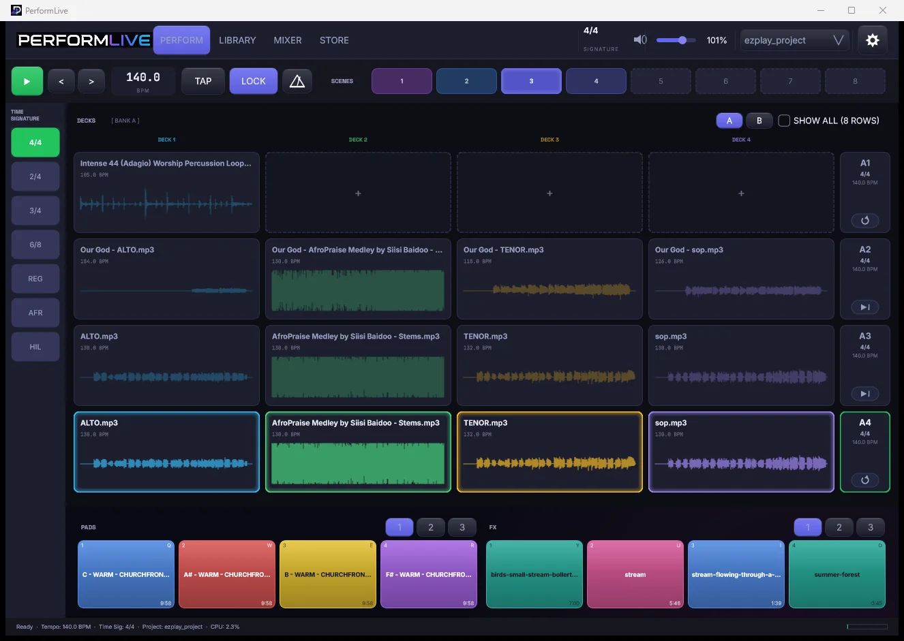
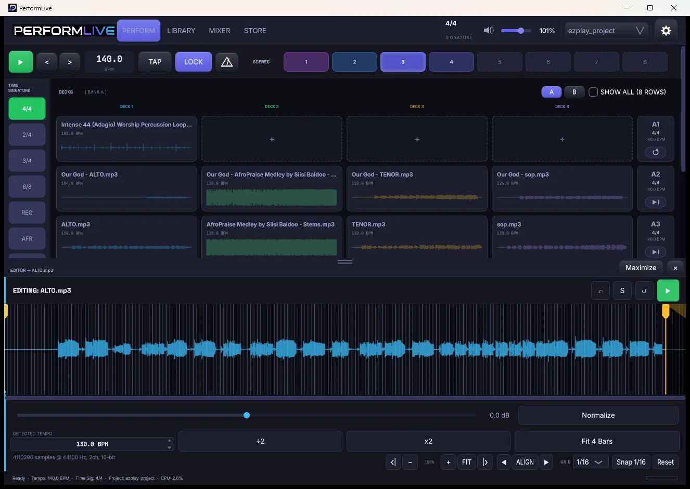
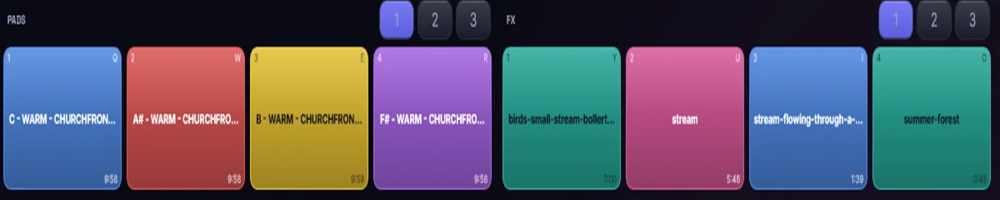
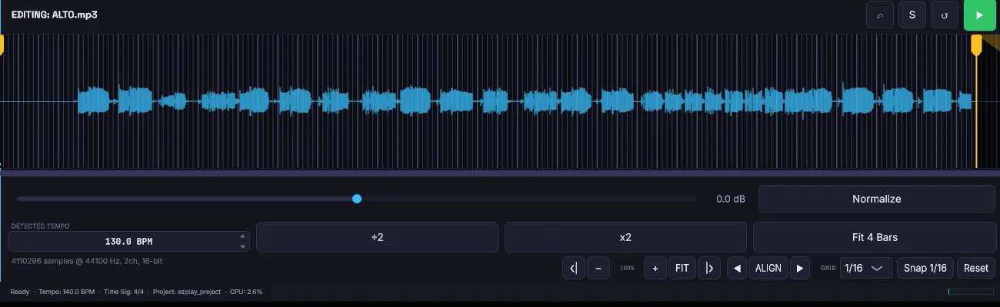
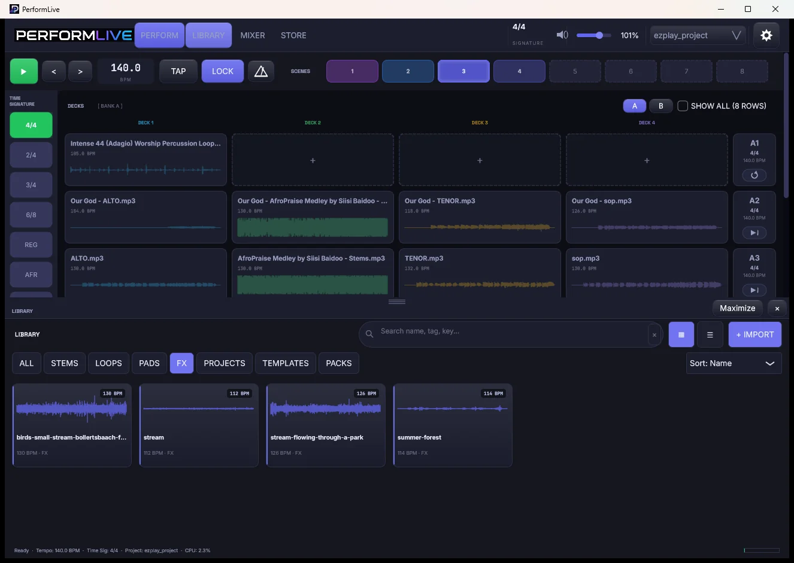
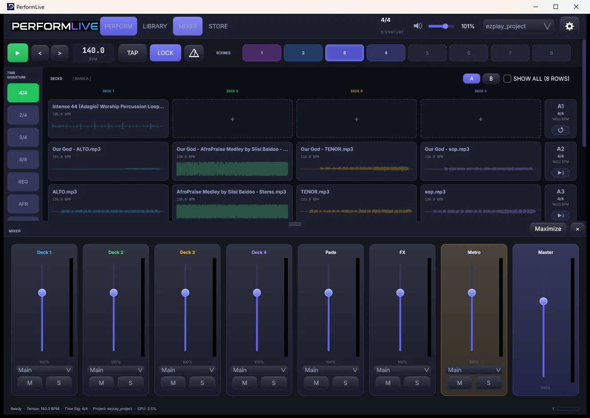
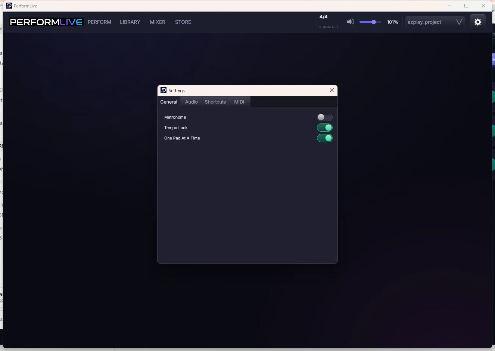
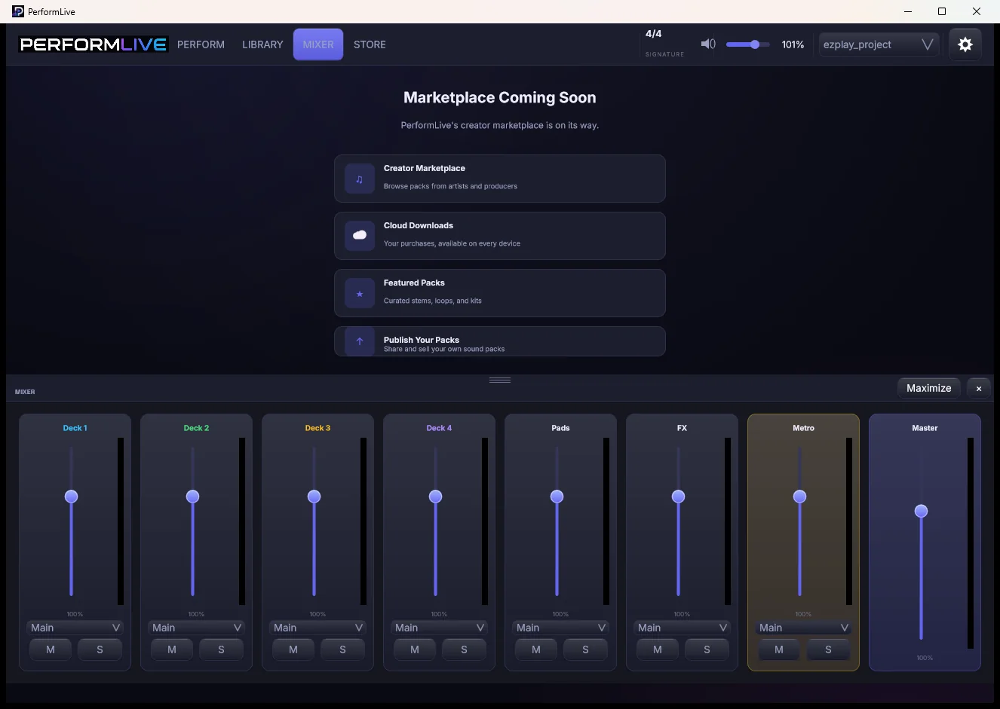

PerformLive is a multitrack playback and stem performance instrument for the stage. Mute a layer mid-song, switch sections on the bar, hold a pad between moments — with the mix your producer built untouched underneath.
Windows. Touch-first. No account, no network activity.

Performers with backing tracks are stuck between a DAW that is dangerous on stage and a stereo bounce that cannot change its mind. PerformLive is the third option.
Every stem is independently mutable while it plays. Breakdowns, a cappella moments, and "just the keys" become live decisions instead of separate bounces.

Twelve colour-coded pads for atmosphere and one-shots. Tap to start, tap to stop, glowing the whole time they sound. A prayer that runs long is no longer a problem.

Bar, 1/2, 1/4, 1/8, 1/16, 1/32, with start and end markers, 64x zoom, and snapping that follows the grid you can actually see.

Trigger a row while another is playing and the switch queues to the next bar. Transitions arrive musically, not whenever your finger did.
Scenes recall the row, the stems, the tempo, and the pads together. Set changes stop being a scramble.
No auto-warp, no auto-trim, no fades. Tempo is detected and shown, never imposed. What you exported is what the room hears.
Drag stems in from anywhere. Tempo is detected on arrival.
Drop them onto decks. Name and colour your rows.
Capture each song as a scene.
Recall, trigger, mute, hold.
Stems in, clips marked, pads and FX under the fingers, the set running. No sound — this is the screen, not the show.
PerformLive, recorded in one take · 54 seconds · no sound




DAWs are excellent tools for a different job. This is about fit for the stage, not quality.
| PerformLive | A DAW on stage | A stereo track | |
|---|---|---|---|
| Per-stem control live | Core function | Possible, buried | Impossible |
| Designed for touch | Every control | Mouse-first | Trivially |
| Risk of a wrong touch | Low by design | High | Low |
| Modifies audio by default | Never | Often | Never |
| Volunteer-operable | Yes | Rarely | Yes |
| Bar-quantised cues | Yes | Yes | No |
| Learning curve | Minutes | Weeks | Minutes |
No warping, trimming, fading or normalising on load. Time-stretch happens only when you explicitly ask.
The shipping build makes no network requests at all. Nothing phones home mid-service.
Crash mid-set and the next launch offers the recovered session. The project file itself stays untouched.
Row triggers, pads, and FX slots each bindable to a controller or a foot pedal.
PerformLive is in final testing. Ask for early access and you will hear when it is ready, and what it costs, before anyone else.